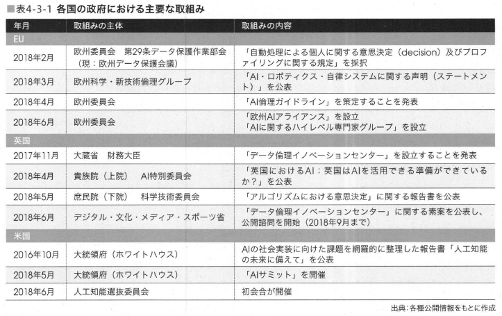

- DAX25-20-04【書籍】 AI白書2019_第4章制度政策動向
- 4.1 総論
- 「4.2知的財産」に関しては、
- 国内では内閣の知的財産戦略本部において議論が行われており、平成30年6月には「知的財産推進計画2018」及び「知的財産戦略ビジョン」が公表されている。
- 平成29年3月に公表された「新たな情報財検討委員会報告書」では、「AIの作成・利活用推進のための知的財産権の在り方」として「AI学習用データ」、「AIのプログラム」、「学習済みモデル」及び「AI生成物」が論点となっているが、「知的財産戦略ビジョン」ではその検討成果を一歩進め、将来における「価値」とそれを生む仕組みの想定や検討課題について提言している。
- AIに関連する法制度上のトピックとしては、著作権法及び不正競争防止法の改正が挙げられる。
- 「4.3AIに関する原則、ガイドライン等」では、
- AI自身のリスク、人間がAIを利用して引き起こすリスク、既存の社会秩序への負の影響、法律・社会の在り方のリスクなどについての国内外の議論を紹介する。
- まず、海外においては、2018年2月の欧州連合(EU)のガイドライン「自動処理による個人に関する意思決定(decision)及びプロファイリングに関する規定」や、2018年6月にカナダ・シャルルボワで開催されたG7首脳会合（サミット）における「人工知能の未来のためのシャルルボワ共通ビジョン」などを説明する。
- 次に国内での議論として、海外における開発基準に関する検討の活発化を踏まえ、平成30年5月より、人工知能技術戦略会議の下に設置された「人間中心のAI社会原則検討会議」について説明する。
- 「4.4制度改革」では、
- AIの社会実装に係る制度改革として注目すべきものとして、「自動運転」と「ドローン」などのモビリティに係る制度改革と「パーソナルデータ」、「匿名加工されたデータ」、及び「個人に関わらないデータ」などのデータ流通に係る制度改革について説明する。
- 「4.5国内の政策動向」では、
- 内閣府が示した未来社会のビジョンSociety5.0において主要な基盤技術の一つとして位置づけられているAI技術の推進について※1、AIの研究開発から社会実装までの政府の横断的かつ主要省庁における取組みを紹介する。
- ※l Society5.0のビジョンを示した第5期科学技術基本計画では、Al技術は「超スマート社会サービスプラットフォームの構築に必要となる基盤技術」に位置づけられている。
- 同基盤技術には他に、サイバーセキュリティ、loTシステム構築、ビッグデータ解析、デバイス、などが含まれている。
- 「4.6海外の政策動向」では、
- AI分野で先行する米国と中国、AIに関する積極的な取組みが注目されるEU、英国、ドイツ、フランス、インドの動向を説明する。
- 4.2 知的財産
- 4.2.1 国内のAI知的財産関連施策の動向
- 内閣知的財産戦略本部の「知的財産推進計画2018」では、
- 重点事項を「(1)これからの時代に対応した人材・ビジネスを育てる」、「(2)挑戦・創造活動を促す」、「(3)新たな分野の仕組みをデザインする」の3つに整理しており、(3)の中で「データ・AI等新たな情報財の知財戦略強化」を挙げている。
- ■表4-2-1rデータ・Al等新たな情報財の知財戦略強化」の施策の方向性
- 短期・中期
- 経済産業省
- 「データの利用権限に関する契約ガイドラインver1.0」を全面改訂し、データに関する契約の深掘りのほか、新たにAlの開発・利用を巡る契約の考え方について整理を行う。
- また、改訂されたガイドラインについて、契約当事者間での活用ひいてはデータ・Alの利活用を促進するため、その周知を行い普及を加速するとともに、利用上の課題の継続的把握や国際展開に向けた検討も行う。
- 内閣官房・総務省・経済産業省
- 情報信託機能の認定スキームに関する指針の運用の推進や官民が連携した実証実験の実施等による情報銀行の実装の検討、我が国におけるデータポータピリティの在り方等に関する検討を継続する。
- 内閣官房・厚生労働省
- 保健医療データを連結し、迅速・円滑に利用可能な仕組みの構築に向け、データ利活用推進のための必要な措置を講ずる。
- 内閣府・関係府省
- オープンサイエンス推進のため、国際的な議論の動向や事例を注視するとともに、国益や研究分野の特性等を意識したオープン・アンド・クローズ戦略に留意し、データポリシーやデータマネジメントプランの策定について検討を行う。
- 農林水産省
- ICT等を活用して、幅広くデータの取得・共有・活用ができる農業データ連携基盤を整備すること等によって、「スマート農業」、「スマート林業」及び「スマート水産業」の実現に向けて取り組む。
- 特に農業分野においては、取得したデータを他者に提供・使用許諾する際の具体的な契約条項のひな型等の検討を行い、農業データ連携基盤等に活用できるデータ利活用・契約に関するガイドラインを作成する。
- 関係府省
- 技術やサービスの動向、海外の知財制度の動向の定点観測の実施と、それを踏まえたさらなる法整備等の必要性の検討。
- 特に、学習用データ、Alプログラム、学習済みモデル、Al生成物について、技術やサービス等の変化に伴う知財制度の在り方を継続的に検討する。
- 経済産業省・文部科学省
- コンテンツの利活用を促進するため、ブロックチェーン等技術を活用した著作物の管理・利益配分の仕組みの構築のための検討を行う。
- 短期
- 文部科学省
- 著作権法における柔軟性のある権利制限規定の整備を踏まえ、法の適切な運用環境を整備するために、ガイドラインの策定、著作権に関する普及・啓発、及びライセンシング環境の整備促進などの必要な措置を講ずる。
- 前年度に公開された「知的財産推進計画2017」では、
- データ・AIの利活用促進に向けて不正競争防止法及び著作権法の改正やデータ契約ガイドラインの整備等が挙げられていたが、これらが計画どおり実施されたことから「
- 知的財産推進計画2018」では、
- そのフォローアップ、データ・コンテンツ利活用の一層の推進などに視点が向けられたものと考えられる。
- また、同本部が平成30年6月に公表した「知的財産戦略ビジョン」では新しい価値を次々に構想し、世界に発信していく「価値デザイン社会」のコンセプトとその実現の鍵となる知的財産に関連する仕組みを提案している。
- 本ビジョンを実現する活動の支えとなる具体的なシステムの例の中でAIに関連するものとしては「次世代のコンテンツ創造・活用システムの構築」がある（図4-2-1)。
- ■図4-2-1検討課題「次世代のコンテンツ創造・活用システムの構築」
- 本システムにおいてAIは、生産性の向上、新たな創作表現の実現、マーケティングや翻訳等ロ一カライズの円滑化などに利用するイメージとなっている。
- 具体的には、コンテンツ制作現場へのAI等新技術導入を支援するとともに、先進的なコンテンツ制作・表現技術の普及を図ったり、マーケティング(AIによるリコメンド等）やローカライズ（自動翻訳等）によるコンテンツの世界同時展開を支援することが挙げられている。
- なお、構築されたコンテンツが素早く、幅広く配信されつつ、適正な対価を関係者に還元するためにブロックチェーン技術の活用もイメージされている。
- 4.2.2 国内のAI知的財産関連課題の検討
- 知的財産戦略本部が平成29年3月に公表した「新たな情報財検討委員会報告書」は、
- 「データ・人工知能(AI)の利活用促進による産業競争力強化の基盤となる知財システムの構築に向けて」という副題のとおり、前年度の同本部次世代知財システム検討委員会が公表した報告書でも検討されていたデータとAIに特化した内容となっている。対象となっている課題は表4-2-2のとおりである。
- ■表4-2-2「新たな情報財検討委員会報告書」の論点
- 第l.データ利活用促進のための知財制度の在り方
- (1)契約（民法）に関する論点
- (2)不法行為（民法）に関する論点
- (3)営業秘密・不正競争防止法に関する論点
- (4)データ利活用促進に向けた論点
- 第2.Alの作成・利活用促進のための知財制度の在り方
- (1) Al学習用データに関する論点
- （「データ作成者」と「Al学習を行う者」が異なる場合の著作権法上の課題等）
- (2) Alのプログラムに関する論点
- (3) 学習済みモデルに関する論点
- (4) Al生成物に関する論点
- 出典：知的財産戦略本部「新たな情報財検討委員会報告書」(2017年3月）
- (l) Al学習用テータに関する論点
- 学習に使用するデータの知的知財制度については
- 「第1. データ利活用促進のための知財制度の在り方」の論点に包括されており、ここでは著作権法第47条の7(平成30年の改正により平成31年1月1日以降は著作権法30条の4第2号）に関する論点が検討されている。
- 我が国の著作権法は、
- 同条により、コンピューター等を用いだ情報解析のために行われる複製等を許容する権利制限規定を有している。
- 具体的には、コンピューターによる情報解析を目的とする場合に限り、元となるデータに第三者の著作物が含まれている場合であっても、必要と認められる限度において著作物を記録または翻案し、学習用データを作成することができる（情報解析を行う者の用に供するために作成されたデータベースの著作物を除く） 。
- 情報解析が営利目的であっても適用される点で、諸外国の規定よりも適用範囲が広いといえる。
- ただし同条では、譲渡や公衆送信が規定されていないため、学習用データを作成する主体（データ作成者）と、実際にAI学習を行う主体(AI学習を行う者）が異なるとき、データ作成者からAI学習を行う者へ学習用データを提供または提示する行為が著作権法上違法と解されるおそれがある。本論点では、この課題にもとづいて検討が行われた。
- 著作権法の改正
- 上記の議論を踏まえ、平成30年の著作権法改正により、同法47条の7(2019年1月1日以降、同法30条の4第2号）は、様々な機械学習に対応できるように、その適用範囲が拡大された。
- 具体的には、コンピューターを用いない情報解析も含まれることになるとともに、自ら解析を行う場合のみならず、情報解析を行う他人のためにAI開発用データセットを作成することや、解析終了後のデータセットを情報解析する他人に送信することも可能になる。
- 同条は、現状でもすでにAI開発や機械学習の発展にとって極めて有用なものであったが、今回の改正によって、さらなる拡充が図られたため、将来的にますますイノベーションの促進が期待されるところである。
- (2) Alのプログラムに関する論点
- 深層学習に利用されるGoogleのTensorflow、PreferredNetworksのChainerなど、学習データから学習済みモデルを生成したり、現実のデータをもとに推論するためのプログラム(AIのプログラム）が検討対象となっている。
- AIのプログラムの多くは無償で使用できるオープン・ソース・ソフトウェア(OSS)として公開されており、作成のインセンティブ付与のために、現状の特許法、著作権法以外の追加措置が必要かどうか検討されている。
- これに対しては、現行知財制度で対応可能であることなどから、特に追加的措置は行わず、状況を注視していくことが適当としている。
- (3)学習済みモテルに関する論点
- 学習済みモデルは、「AIのプログラムとパラメーターの組み合わせ」であることから、現行知財制度上、著作権法の要件を満たせば「プログラムの著作物」として保護される可能性がある（パラメーターがAIプログラムと別に保持されている場合は必ずしも明確ではないと考えられる） 。
- また、要件を満たせば特許法または不正競争防止法で保護される。
- しかしながら、学習済みモデルから生成される「派生モデル」及び「蒸留モデル」（図4-2-2)については、学習済みモデルと比較して容易に作成できるうえ、元のモデルとの関連性を立証することが困難であることから、学習済みモデルの知的財産保護上の課題となりうると指摘されている。
- ■図4-2-2学習済みモテルに関わる課題の状況
- そこで「派生モデル」及び「蒸留モデル」を考慮した学習済みモデルの保護の在り方について「契約」、「特許権」、「著作権」及び「新しい権利」の観点で検討が行われている（表4-2-3)。
- ■表4-2-3「派生モデル」及びr蒸留モデル」を考慮した学習済みモテルの保護の在り方の検討
- また、現状のビジネスにおいては、学習済みモデルを営業秘密として管理しつつ、出力等の結果を使ってサービスを提供するビジネス形態がある（学習済みモデルは不正競争防止法により保護される）。
- しかし、学習済みモデルを研究・開発の観点から再利用するなどのためにインターネット上などで公開する場合には、秘密管理性及び非公知性の要件を満たさなくなり、不正競争防止法による保護はなくなる。
- そこで、秘密として管理せずに利活用を広く進めることを支援するような法的な枠組みがビジネス上の選択肢として必要かどうかという問題を、データ利活用促進に向けた公正な競争秩序の確保の検討の中で併せて検討することが適当、としている。
- 不正競争防止法の改正
- 以上のような議論の結果、平成30年の不正競争防止法の改正により、たとえ秘密管理性や非公知性の要件を満たさないとしても、「業として特定の者に提供する情報として電磁的方法…（中略）…により相当量蓄積され、及び管理されている技術上又は営業上の情報」を「限定提供データ」として、一定の不正行為から保護されることになった（改正後不正競争防止法2条7項）。
- これによって、例えば、あるコンソーシアム内で共有されているビッグデータがIDとパスワードで管理されているような場合、これを不正の手段によって取得・使用・開示する行為等に対して差止等を請求できることになる。なお、この改正法は平成31年7月1日に施行される。
- (4) Al生成物に関する論点
- AIの生成物に関して、「AIを用いたサービスに関する保護の可能性」、「AIを活用した創作（著作物）に関する保護の可能性」及び「AI生成物が問題となる（悪用される等）可能性」の3つの課題について検討が行われている（表4-2-4)。
- Alを用いたサービスに関する保護の可能性
- Al生成物を用いたサービスの提供方法についてはピジネス関連発明として特許の可能性があること、一方でビジネス関連発明は日本国外においては認められないおそれがあるため各国の特許庁と引き続き国際的な調和の取組みを行うことが必要。
- Alを活用した創作（著作物）に関する保護の可能性
- 「AIを活用した創作（著作物）に関する保護の可能性」については、深層学習を利用したAI生成物の著作物性及び著作者に関する検討が行われている。
- 具体的には、学習済みモデルの利用者に創作意図がありかつ創作的寄与があれば、生み出されたAI生成物には著作物性が認められ利用者が著作者になる（図4-2-3上図）一方で、創作的寄与が認められないような簡単な指示に留まる場合はAI創作物として、現行の著作権法上は著作物と認められない（図4-2-3下図）と整理している。
- ■図4-2-3「Al 生成物」のイメージ
- ただし、具体的にどのような創作的寄与があれば著作物性が肯定されるかについては、利用者が学習済みモデルに画像を選択して入力するなど何らかの関与があればよいという指摘や、単にパラメーターの設定を行うだけであれば創作的寄与とはいえないのではないかとの指摘があり、現時点で、具体的な方向性を決めることは難しく、AI技術の進展に注視しながら、具体的な事例に即して引き続き検討することが適当、としている。
- Al生成物が問題となる（悪用される等）可能性
- 第三者の著作物であるデータ（音楽データ等）で機械学習した学習済みモデルが元のデータと類似するデータを出力する場合の問題、Al創作物を人間の創作であるとして市場に供給する問題が挙げられており、いずれも現状では明確な判断が難しく、事例や利活用状況を注視し、引き続き検討することが適当。
- 4.2.3 海外のAI知的財産関連動向
- AIと知的財産法制度を巡っては、昨今、日本国内で盛んな議論が展開されているが、諸外国においては、我が国のように大きな政策課題として論じられている国は見当たらない※2※3。ただ、諸外国においても、AIと知的財産法について以下のような状況がある。
- ※2 知的財産戦略本部・新たな情報財検討委員会においても、2017年1月30日~2月38にかけて、欧州委員会、マックスプランク研究所及びミュンヘン大学の有識者に対する欧州調査が行われたが、「Alの行った行為の責任に関する議論はされているが、知財に関する議論はほとんど行われていない」とされている（知的財産戦略本部検証・評価・企画委員会新たな情報財検討委員会「新たな情報財検討委員会報告書」別添参考資料集p.l0 「（参考7)欧州におけるデータ・ Alを巡る議論の状況」参照）。
- 後日、詳細入力
- 4.3 AIに関する原則、ガイドライン等
- 4.3.1 海外における取組み
- (1)政府における議論
- ●表4-3-1 各国の政府における主要な取組み
- 
- (2)国際的な枠組みにおける議論
- ■表4-3-2国際的な枠組みにおける主要な会議
- (3)民間における議論
- ■表4-3-3民間における主要な取組み
- 4.3.2 我が国における「AI社会原則」の議論
- (1) 「人間中心のAl社会原則検討会議」に関連する動向
- 我が国においては、前項に示した海外における開発基準に関する検討の活発化を踏まえ、人工知能技術戦略会議の下に平成30年5月より、「人間中心のAI社会原則検討会議」が設置された。
- また、AI技術並びにAIの中長期的な研究開発及び利活用等をするにあたって考慮すべき倫理等に関する基本原則については、産学民官のマルチステークホルダーによる幅広い視野からの調査・検討を行うことを目的としている。
- 現在、平成30年度中に一定の結論を得ることを目指して、検討が進められている（図4-3-1)。
- ■図4-3-1r人間中心のAl社会原則検討会議のアウトプットレベル（案）」
- 後日詳細入力
- ■図4-3-2「AI利活用原則案」
- ■表4-3-4rAl 利活用原則案」の解説と主な論点
- 後日詳細入力
- ■図4-3-3Al・データの利用に関する契約ガイドラインの全体像
- (2)その他の政策や民間による取組みの動向
- 4.4 制度改革
- 概要
- 本節では、AIの社会実装に係る制度改革として注目すべきものとして、モビリティに関する制度改革とデータ流通に係る制度改革の2つについて解説する。
- 機械学習ではデータとフィードバックによりアルゴリズムが改善されるため、2つの制度改革を組み合わせて、いかにAIの学習環境を整備できるかが重要となる。
- 前者は開発したAIを物理空間で学習させるための制度改革である。本節ではモビリティ領域の制度改革の方向性や実証実験の現状などを解説する。
- 後者はデータの循環をデジタル空間で滞りなく行うための制度改革である。
- 本節では様々な領域におけるデータ流通について、それぞれ制度改革を概説する。
- 4.4.1 モビリティに係る制度改革
- (1)自動運転に係る制度整備
- ■図4-4-1「官民ITS構想・ロードマップ2018」の市場化・サービス実現シナリオと実現時期
- ■図4-4-2官民ITS構想・ロードマップ2018(ロードマップ全体像）
- ■表4-4-1自動運転の定義の概要
- ■図4-4-3制度整備大綱にもとづいた主な取組み事項と2020年の実現イメージ
- ■図4-4-4日本における主な自動運転実証実験（予定含む）
- (2)ドローン
- ■図4-4-5空の産業革命に向けたロードマップ2018(小型無人機の安全な利活用のための技術開発と環境整備）
- 4.4.2 データ流通に係る制度改革
- 概要
- ●図4-4-6テータ流通環境の整備
- ■表4-4-2データ流通・活用に関する主な取組み状況
- (l)パーソナルデータ
- ■図4-4-7PDSの定義
- ●図4-4-8情報銀行の定義
- ■図4-4-9テータ取引市場の定義
- ■図4.-4-10r情報信託機能の認定に係る指針verl.0」の概要
- ●図4-4-11 loT推進コンソーシアム
- ■図4-4-12カメラ画像利活用ガイドブックver2.0:リピート分析
- (2)匿名加工されたテータ
- 概要
- 匿名加工情報とは「特定の個人を識別することができないように個人情報を加工し、当該個人情報を復元できないようにした情報」※64のことである。
- 平成27年9月の個人情報保護法の改正により新設された制度であり、一定のルールの下で、本人の同意が不要となるパーソナルデータの利活用を促進することを目的としている。
- 匿名加工情報それ自体は特定の産業を対象としているわけではないが、特に注目されているのが医療分野での活用である。平成30年5月に施行された「医療分野の研究開発に資するための匿名加工医療情報に関する法律」（次世代医療基盤法）は、医療情報の取得と利活用を促進することを目的としており、匿名加工医療情報の作成を認定事業者に集約するスキームが設計されている（図4-4-13)。
- 医療情報は要配慮個人情報に該当するため、匿名加工医療情報を第三者提供する場合には本人の同意が必要となるが、同法で規定されたスキームに従えば、オプトアウト手続きによる医療情報の取得と匿名加工処理された同情報の第三者提供が可能となる。
- ■図4-4-13次世代医療基盤法の全体像
-
- (3)個人に関わらないテータ
- 内閣府の総合科学技術・イノベーション会議(CSTI)は、平成30年1月より「データ連携基盤サブワーキンググループ」を設置し、人工知能とビッグデータを共有・活用する「データ連携基盤」の取組みを推進している（図4-4-14)。
- 同プロジェクトは、戦略的イノベーション創造プログラム(SIP)などの研究開発プロジェクトで進められていた分野内でのデータ連携の取組みを、分野間の連携にまで推し進め、分野横断的プラットフォームを構築することを目指している。
- 連携の主な課題としては、多様なデータフォーマットなどの存在が挙げられており、データの構造や語彙の標準化が計画されている（図4-4-15)。
- 具体的な連携対象分野としては、①防災・減災、② インフラ維持管理、③自動走行、④農業、⑤材料、⑥海洋、⑦宇宙、⑧G空間情報センター、⑨地球環境情報PF、などが予定されている。
- ■図4-4-14テータ連携基盤の整備
-
- ※66 <http://www8.cao.go.jp/cstp/siryo/haihui034/siryo1-5.pdf>
-
- ■図4-4-15共通語彙基盤(IMI;Infrastructure for Multi-layer Interoperability)
- 分野横断でのデータ交換を目的としたフレームワーク（世界最先端IT国家創造宣言で推進）
- ・デジタル・ガバメントの基盤として取り組まれるが、将来は社会全体で活用することを前提に設計を実施
- ・米国政府の推進するNIEMと同様に、社会の中核になるコア語彙と分野別の専門分野（ドメイン）語彙を体系的に整理
- 平成30年6月には「生産性向上特別措置法」が施行され、データ流通に係る取組みとして「産業データ共有事業の認定制度」が創設された※68。
- 生産性向上特別措置法は、革新的な技術やビジネスモデルを用いた事業活動による生産性向上を目的とした政策パッケージであり、
- ①「プロジェクト型『規制のサンドボックス』制度の創設」*69、
- ② 「データの共有・連携のためのIoT投資の減税等」、
- ③「中小企業の生産性向上のための設備投資の促進」
- の3つの施策を軸としている。（図4-4-16)。
- ●図4-4-16生産性向上特別措置法案における主な措置事項※70
- 「①プロジェクト型『規制のサンドボックス」制度の創設」は、
- 参加者や期間を限定すること等により、既存の規制にとらわれることなく新しい技術等の実証を行うことができる環境を整備することで、迅速な実証及び規制改革につながるデータの収集を可能とするものである。
- また、ConnectedIndustries関連政策である「産業データ共有事業の認定制度」は
- 「②データの共有・連携のためのIoT投資の減税等」の一環であり、協調領域におけるデータの収集・活用等を行う民間事業者の取組みを、セキュリティ確保等を要件として主務大臣が認定して支援する（図4-4-17)。
- ■図4-4-17産業データ共有事業の認定制度
- 産学官が連携したデータ流通に係る取組みとしては、前述のIoT推進コンソーシアムが、平成29年4月に「データ流通プラットフォーム間の連携を実現するための基本的事項」を公表している。
- 同コンソーシアムは、平成29年2月より「データ連携サブワーキンググループ」を開催し、データ流通プラットフォームを提供する事業者がデータ連携のために最低限共通化すべき事項について検討してきた。
- その検討結果として、データカタログ（メタデータ）とカタログ用APIの整備が必要事項として整理されている。
- また平成29年11月には、IoT推進コンソーシアム・総務省・経済産業省などでの検討を踏まえて、一般社団法人データ流通推進協議会が設立された。
- 同協議会の目的は「データ提供者が安心して、かつスムーズにデータを提供でき、またデータ利用者が欲するデータを容易に判断して収集・活用できる技術的・制度的環境を整備すること等」汲72であり、データ流通事業者間の相互連携の推進や、データフォーマットの整備などを行う。
- 4.5 国内の政策動向
- はじめに
- 内閣府が平成30年度の経済財政政策の基本方針を示した「経済財政運営と改革の基本方針2018」（骨太の方針2018)では、
- 潜在成長率の引き上げや重要課題への取組みとして、未来社会のビジョンSociety5.0の実現が目標として掲げられている。
- また、平成30年度の成長戦略を示した「未来投資戦略2018」においても、
- 第4次産業革命の技術革新を活かして、Society5.0を実現することが目標に掲げられている。
- AI技術は
- Society5.0を構築するための基盤技術の一つ※73であり、同ビジョンを実現するための規制改革や、研究開発及び投資・イノベーションを推進する政策とは不可分な関係にある。
- 近年のAIに関する国内政策は、
- 研究開発から社会実装まで一気通貫した取組みが志向されており、産学官を横断した施策や会議体の縦横連携が拡大している。
- その中で中心的な役割を担うのが、
- ①統合イノベーション戦略推進会議、
- ②総合科学技術・イノベーション会議(CSTI)、
- ③人工知能技術戦略会謙
- の3つの会議体である（図4-5-1)。
- ■図4-5-1国内のAl政策における府省庁連携体制
- 4.5.1 統合イノベーション戦略、同推進会議による政府横断の取組み
- 内閣府の総合科学技術・イノベーション会議(CSTI)は、現在の我が国の科学技術政策の基本計画を定めた「第5期科学技術基本計画」（第5期基本計画） ※75を所管しており、年度ごとに重点分野を定めた「科学技術イノベーション総合戦略」※76を策定している。
- 第5期基本計画の折り返し点である平成30年6月には、これまでの計画や総合戦略を評価し、今後とるべき取組みを示した「統合イノベーション戦略」※77が閣議決定された。
- それにもとづき、イノベーションに関連が深い司令塔会議である総合科学技術・イノベーション会議、高度情報通信ネットワーク社会推進戦略本部、知的財産戦略本部、健康・医療戦略推進本部、宇宙開発戦略本部及び総合海洋政策本部並びに地理空間情報活用推進会議について、横断的かつ実質的な調整を図るとともに、同戦略を推進するため、内閣に統合イノベーション戦略推進会議※78が設置された（図4-5-2)。
- AIをはじめとするイノベーションのための各種会議を有効に機能させ、政策を統合して「全体最適化」を図り、一丸となって、迅速かつ確実に実行することを目的としている。
- 統合イノベーション戦略推進会議には、総理大臣補佐官をチーム長とし、各司令塔会議事務局・各省庁幹部を構成員とするイノベーション政策強化推進チームが設置され、AI等個別テーマごとに有識者会議の提言をもとに施策の推進を図ることとしている。
- 第2回(9月28日）の会議では、有識者より「AI戦略（案）全体俯敵図」が提出され、教育改革、研究開発、社会実装の3つの視点からのAIの推進が提案された※79。
- これを踏まえ、具体的な「政策パッケージ」の策定が開始されている※800
- ■図4-5-2統合イノベーション戦略の推進体制
- 統合イノベーション戦略は、科学技術イノベーション創出の基礎となる「知の源泉」を構築し、それを踏まえて産学が様々な「知を創造」することにより、その知が創業や政府事業を通じて次々に社会実装されて国内外に展開される、というモデルを想定して立案されている。
- 「知の源泉」については、データ・情報がキーであるとして、データ基盤の重要性がうたわれている。
- 具体的には、Society5.0の実現に向けたデータ連携基盤の整備（図4-5-3)や、オープンサイエンスのためのデータ基盤の整備が計画されている。
- Society5.0の実現に向けたデータ連携基盤の整備については、「4.4.2データ流通に係る制度改革」を参照されたい。
- ■図4-5-3統合イノベーション戦略で示されたSociety5.0の実現に向けたテータ連携基盤の整備
- 目指すべき将来像
- ・安全・安心にデータを利活用等できる機能注lを持ち、世界に先駆けて、Alを活用して、様々な分野のデータが垣根を越えてつながるデータ連携基盤を整備し、組織や分野を越えたデータの利活用等を通じて新たな価値を創出
- ・データ流通・保護に関して国際社会と共通の価値観を有し、欧米等主要各国とのデータ連携を実現することで、グローバルなデータ流通市場を創出
- 目標
- ・分野間データ連携基盤（注2）について、分野ごとのデータ連携基盤との相互運用性を確保しつつ、3年以内に整備、5年以内に本格稼働
- ・5年以内にデータ連携基盤上において、Alによるピッグデータ解析が可能となる環境を提供
- 目標達成に向けた主な課題及び今後の方向性
- ・分野ことのデータ連携基盤の整備は進められてきたが、データ連携に関する政府の司令塔機能等が十分ではなかったことから、分野間データ連携基盤については未着手
- ・CSTI及びIT総合戦略本部が司令塔として、具体的な期限目標を設定し、関係府省庁、民間協議会等が一体となって、分野間データ連携基盤を整備
- ・分野間デ＿夕連携基盤の全体設計の進展を踏まえ、相互運用性を確保しつつ、分野ごとのデータ連携基盤の整備を加速
- ・データ連携基盤の整備に当たっては、欧米等との相互運用性を確保しつつ、サイバーーセキュリティや個人情報保護等の課題に対応する機能を確保
- 「知の創造」については、
- 研究人材の強化やマネジメント手法の高度化が目標とされており、CSTIが所管する戦略的研究開発プログラムの今後の方向性（図4-5-4)や、大学改革等によるイノベーション・エコシステムの創出などが示されている。
- CSTIの戦略的研究開発プログラムは、府省庁や産学官を横断した施策としてCSTIが予算配分の権限を有しており、Society5.0の実現に向けた我が国の科学技術イノベーション戦略の柱である。
- 統合イノベーション戦略において、
- AI技術は特に取組みを強化すべき主要分野※82の一つに位置づけられており、目指すべき将来像や今後の方向性が打ち出されている（図4-5-5)。
- AI技術を中心としたIT人材の不足が問題視されており、レベルに応じた人材の育成・活用の指針が定められている。
- また、米国や中国に対する劣後について、自前主義を脱却し、産学官の英知を結集して社会実装を迅速に進めていくことの必要性が主張されている。
- ■図4-5-4統合イノペーション戦略で示された戦略的な研究開発の方向性(SIP、PRISM、lmPACT)
- ■図4-5-5統合イノベーション戦略で示されたAl技術の今後の方向性
- 4.5.2 人工知能技術戦略会議による研究開発・産業連携の推進
- AIの研究開発と社会実装に向けた具体的な取組みについては、CSTIの下部にある「人工知能技術戦略会議」が司令塔機能を有している。
- 同会議は平成28年4月に開催された「未来投資に向けた官民対話」における総理指示を受けて創設された会議体であり、基盤省庁（総務省・文部科学省・経済産業省）が所管する5つの国立研究開発法人を束ねて研究開発を進めるとともに、AIを利用する側の出口省庁（農林水産省・厚生労働省・国土交通省）や内閣府と連携して、AI技術の社会実装を進めている（図4-5-6)。
- ■図4-5-6人工知能技術戦略会議の連携体制
- 人工知能技術戦略会議は、AIの研究開発から社会実装まで一貫した取組みを加速させるべく、平成29年3月に「人工知能技術戦略」を策定した。
- また、同戦略の取組み進捗や課題を踏まえ※86、取組み内容を具体化した「人工知能技術戦略実行計画」を、平成30年8月に公表した。
- 同計画では、人工知能技術戦略で定められた5つの施策について、統合イノベーション戦略と軌を一にするように、関係各府省庁の具体的な取組み内容が示されている（表4-5-1)。
- 達成時期については、統合イノベーション戦略と同様、特に②人材育成への対応が急務とされている。
- ■表4-5-1人工知能技術戦略実行計画の概要
- 人工知能技術戦略会議の運営は、研究の総合調整を担う「研究連携会議」、研究開発と産業の連携総合調整を担う「産業連携会議」及びAI技術やAI開発等において考慮すべき倫理等を議論するための「人間中心のAI社会原則検討会議」の3つの会議体を軸として行われている。
- 研究連携会議には、総務省の所管する情報通信研究機構(NICT)、文部科学省の所管する理化学研究所（理研）と科学技術振興機構(JST)、経済産業省の所管する産業技術総合研究所（産総研）と新エネルギー・産業技術総合開発機構(NEDO)の5センターが参画している。
- その中で主翼を担っているのは、NICT・理研・産総研の3センターであり、それぞれ以下の研究テーマを担当している。
- NICTの脳情報通信融合研究センター(CiNet)とユニバーサルコミュニケーション研究所(UCRI)では、自然言語処理、多言語音声翻訳、脳情報通信などの研究を実施している。
- 理研の革新知能統合研究センター(AIP)では、小規模データから高精度学習が可能となる新たなアルゴリズムの開発など、基礎研究・墓盤技術の研究を中心としている。
- 産総研の人工知能研究センター(AIRC)では、それらの研究成果を産業分野へ応用する研究などを実施している。
- 研究開発の動向については、2章「技術動向」を参照されたい。
- 産業連携会議は、AI技術に関する人材育成、標準化・ロードマップ作成、技術・知財動向分析、規制改革分析などを担っている。
- 平成29年3月には、同会議での検討結果をもとに「人工知能とその他関連技術の融合による産業化のロードマップ」が策定されており、人工知能技術戦略会議の依拠する産業化ロードマップが示されている。
- 同ロードマップは、①AI技術が他の関連技術と融合し、②様々な社会課題を解決することで※89、③大きな産業へと成長する、という視点に立脚して策定されている。
- ①については、技術面での可能性を整理したものとして、AI技術の発展段階が整理されている（図4-5-7)。
- ② と③については、喫緊の課題かつAI技術による貢献と経済効果が大きな重点分野として、「生産性」、「健康、医療・介護」、「空間の移動」及び横断的な「情報セキュリティ」の4分野について、ロードマップが策定されている（図4-5-8)。
- 人間中心のAI社会原則検討会議は、2018年5月に設置され、AIをより良い形で社会実装し共有するための基本原則となる人間中心のAI社会原則を策定し、同原則をG7及びOECD等の国際的な議論に供するため、AI技術並びにAIの中長期的な研究開発や利活用等にあたって考慮すべき倫理等に関する基本原則について、産学民官のマルチステークホルダーによる幅広い視野からの調査・検討を行うことを目的としている。
- 2018年度中に一定の結論を得ることを目指して、検討が進められている（詳細は、「4.3.2我が国における「AI社会原則」の議論」を参照） 。
- ■図4-5-7フェーズによるAlの発展段階の整理
- ■図4-5-8Alの研究開発目標と産業化のイメージ
- 人工知能技術戦略会議では、産業化ロードマップの実現に向けて、CSTIの所管する戦略的イノベーション創造プログラム(SIP)及び官民研究開発投資拡大プログラム(PRISM)との連携が検討されている（図4-5-9、図4-5-10)。
- SIPは、CSTIが府省・分野の枠を超えて自ら予算配分を行い、基礎研究から出口（実用化・事業化）までを見据え、規制・制度改革を含めた取組みを推進するプログラムである※92。
- PRISMは、民間の研究開発投資誘発効果の高い領域（ターゲット領域）を定め、各府省の施策を誘導して連携を図るとともに、必要に応じて追加の予算を配分することで領域全体としての方向性を持った研究開発を推進するプログラムである※93。
- PRISMは新型SIPとも呼称されており、既存SIPとの二本立ての施策として、CSTIによる司令塔機能を通じた相乗効果が期待されている。
- ■図4-5-9重点テーマの特定とSIP/PRISMを中核とした省庁連携推進（案）
- ■図4-5-1o Society 5.0の実現のための11システムに対するSIPとPRISMのターゲット領域
- 以下に、CSTIが所管する3つの戦略的研究開発プログラムのうち、特にAI技術の活用がうたわれているものをまとめた（表4-5-2)。
- 革新的研究開発推進プログラム(ImPACT)は、実現すれば産業や社会の在り方に大きな変革をもたらす革新的な科学技術イノベーションの創出を目指し、ハイリスク・ハイインパクトな挑戦的研究開発を推進するプロジェクトである。
- ■表4-5-2特にAl技術の活用がうたわれている戦略的研究開発プログラム(SIP、PRISM、lmPACT)
- 4.5.3 基盤省庁・出口省庁の方針と動向
- 4.5.4 予算の動向
- 4.6 海外の政策動向
- 4.6.1 米国
- 4.6.2 EU
- 4.6.3 英国
- 4.6.4 ドイツ
- 4.6.5 フランス
- 4.6.6 中国
- 4.6.7 インド
- 【column05】法制度はゆっくりやれば当然できる。スピードが肝／喜連川優
- 【column06】AIと倫理・社会的受容性／北野宏明